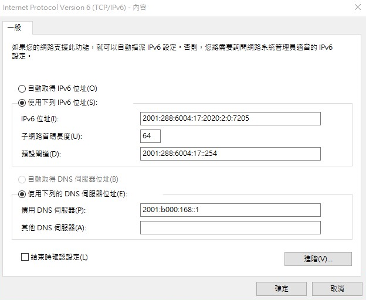

group3 <<
Previous Next >> 40723121
40723205
IPV6下伺服器連線設定
在老師倉儲下的downloads開啟w13_ipv6_assignment.txt。
設定IPv6網路，IPv6位址輸入2001:288:6004:17:2020:2::7205(2=乙班、7227=乙班5號)。

預設匝道輸入2001:288:6006:17::254。
設定整體系統埠號，將主機IP改為個人IP。
開啟Ubuntu輸入密碼kmol2020。
開啟LXTermial再到cd2020pj1。
要記得git pull檢查有無更新版本，cd docs/cmsimde。
輸入vi wsgi.py，將host改為個人主機IP按i編輯，按Esc輸入:wq存儲。
開啟putty。
設定SSH下的X11。
Enable X11 fowarding打勾並在X display location中輸入localhost:0.0。
設定完成後存儲。
輸入帳密kmol2020，打開XLaunch.exe並輸入xterm&啟動。
進入tmp/cd2020pj1/docs/cmsimde，輸入python3 wsgi.py開啟。
網址為[該主機IP]:17443要關閉proxy。
這樣就完成了。
.IPv4 Ubuntu對外連線設定操作
點選檔案-喜好設定-網路-新增一個NAT網路。
編輯NAT網路-連接埠轉送-新增4個新的連接埠轉送埠號。
設定主機IP為127.0.0.1；客體IP為10.0.2.4；主機連接埠為22、19999、17443、18443；客體連接埠為22、19999、7443、8443。
設定-網路-設定主機網路為NAT Network。
啟動，接著輸入密碼kmol2020。
開啟LXTermial，輸入ifconfig之後再輸入sudo apt install net-tools再輸入密碼kmol2020。
cd tmp->ls-輸入ping 127.0.0.1測試-cd cd2020pj1-git pull。
打sudo vi wsgi.py編輯內容，按i進行編輯。
近端的host改為10.0.2.4，按Esc並輸入:wq存儲。
開啟leo和cd2020pj1.leo，點選Nav搜尋allowExt。
點開fileuploadfrom，並將第10行新增一個ttt檔，之後存儲並關閉leo。
接著在tmp下新增oauth_scrum.txt，並輸入sudo vi oauth_scrum.txt。按i編輯，隨便輸入即可，接著按Esc並輸入:wq存儲。
cd cd2020pj1，並輸入python3 wsgi.py啟動。
網址為https:/127.0.0.1:18443/alogin。
帳號及密碼都為admin，進入後點選fileuploadform，選擇要上傳的ttt檔。
點選download list檢查檔案是否上傳完成。
這樣就完成了。
group3 <<
Previous Next >> 40723121